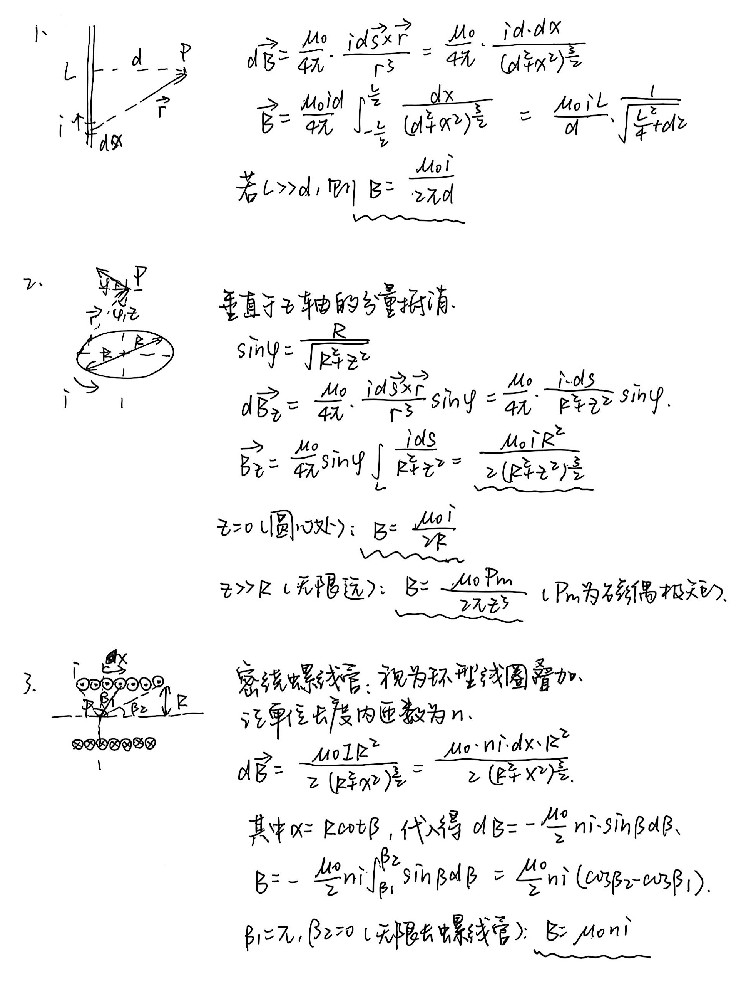

静磁场，磁力
阅读信息
1556 字 6 分钟 本页总访问量 加载中...
静磁场
静磁场散度为零。对于任意封闭曲面，磁通量为零。
静磁场是无源场，不是保守场。
电流形成的磁场：视为电荷运动产生磁场的叠加。
洛伦兹力、安培力
洛伦兹力的计算：
洛伦兹力叠加得到安培力：
磁场中圆周运动，速度选择器，托卡马克磁约束，测量荷质比：略。
霍尔效应
载流子在电场与磁场中受力平衡：
设导体宽度为 \(l\) ，则横向电势差为：
设材料厚度为 \(t\) ，载流子体密度为 \(n\) ，电荷量为 \(q\) ，则可用电流表示 \(v\)：
定义霍尔系数 \(R_H = \frac{1}{nq}\) ，则
其中霍尔系数是宏观可测量量。
磁偶极子
磁偶极子定义
单根导线受力与力矩：设导线长度为 \(l\) ，电流为 \(I\) ，磁场为 \(\vec{B}\) ，夹角为 \(\theta\) ：
推广到闭合线圈（面积 \(A\) ）：
若磁场方向与线圈平面垂直，则线圈各边所受安培力合力为零，但存在力矩（除非磁场平行于法向量）。
在均匀磁场中，任意闭合载流线圈所受合力为零，但可能有力矩。
磁偶极子是封闭的载流线圈，其磁偶极矩为：
其中 \(\hat{n}\) 是由右手定则确定的法向量。
磁偶极子能量和受力
在均匀磁场中，磁偶极子所受合力为零，但力矩 \(\vec{\tau} = \vec{\mu} \times \vec{B}\) 不为零。力矩方向使 \(\vec{\mu}\) 趋向于与 \(\vec{B}\) 同向。
（对比电偶极子： \(\vec{\tau} = \vec{p} \times \vec{E}\) ）
磁偶极子势能表达式：
当 \(\vec{\mu}\) 与 \(\vec{B}\) 方向一致时，能量最低（稳定平衡）。
非均匀磁场中磁偶极子
在非均匀磁场中，磁偶极子会受到净力：
更准确形式（矢量梯度）：
毕奥·萨伐尔定律
运动点电荷的毕奥·萨伐尔定律：
电流元的毕奥·萨伐尔定律：
其中 \(\mu_0=4\pi\times 10^{-7} T\cdot m/A\)，称为真空磁导率（permeability constant）。
真空磁导率和真空电导率满足 \(\varepsilon_0 \mu_0 c^2=1\)，对运动点电荷的毕奥·萨伐尔定律进行代换可得：
故运动电荷产生电场和磁场，且两者相互垂直。
示例 毕奥·萨伐尔定律求磁感应强度

电流元间相互作用与牛顿第三定律
毕奥–萨伐尔定律给出磁场：
电流元 \(I_1d\boldsymbol\ell_1\) 处于 \(I_2d\boldsymbol\ell_2\) 产生的磁场中，受到洛伦兹力
若直接交换 1 与 2 计算 \(d\mathbf F_{21}\)，一般不等于 \(-d\mathbf F_{12}\)。 也就是说：两个电流元对彼此的磁力不满足牛顿第三定律。
这种“不对称”在形式上可以清楚看出来——磁力涉及向量积和空间方向的关系，它并不是沿连线方向的作用力，因此力对不共线。
为什么出现这种“不守恒”？
因为在推导毕奥–萨伐尔定律时，我们作了两个关键近似/忽略：
-
忽略电场变化（静磁近似）： 假设电流是恒定的，不考虑随时间变化的电磁场传播延迟。 实际上磁场变化会在有限时间内传播，产生附加的感应电场。
-
忽略电磁场本身的动量： 在力学中我们默认“系统总动量 = 物体动量之和”； 但在电磁系统中，电磁场也携带动量和能量。 若只算带电体的机械动量，就可能看似违反牛顿第三定律。
因此，“违反牛顿第三定律”只是因为我们只看了物体间的力，而没看“场对系统动量的贡献”。
麦克斯韦方程组和洛伦兹力律结合后，可以严格推导出总动量守恒方程：
其中：
是电磁场的动量密度（对应坡印廷矢量 \(\mathbf S=\frac{1}{\mu_0}\mathbf E\times\mathbf B\)）。
也就是说：带电粒子之间的机械动量不守恒；但系统“带电粒子 + 电磁场”的总动量守恒；电磁场可以储存、传递动量，从而“补上”牛顿第三定律看似缺失的部分。
一句话总结：牛顿第三定律表面被破坏，是因为场在传递动量；加上电磁场的动量，系统总动量守恒，定律依然成立。
安培环路定理
安培环路定理给出，沿封闭回路的磁感应强度的线积分 = 穿过以封闭回路为边界的任意曲面的电流的代数和。即：
微分形式：
磁铁产生磁场的原理
电子绕原子核运动形成轨道磁偶极矩。考虑一个电子在半径为 \(r\) 的圆轨道上以速度 \(v\) 运动，其轨道周期为 \(T = 2\pi r / v\) ，等效电流为 \(i = e / T = e v / (2\pi r)\) ，回路面积为 \(A = \pi r^2\) ，因此轨道磁矩大小为
另一方面，电子的轨道角动量大小为 \(L_{\text{orb}} = m_e v r\) （其中 \(m_e\) 为电子质量），因此磁矩可表示为
这表明轨道磁矩与轨道角动量成正比，方向相反（因电子带负电）。
在量子力学中，角动量是量子化的。轨道角动量的 z 分量满足 \(L_z = m_\ell \hbar\) ，其中 \(m_\ell = 0, \pm1, \ldots, \pm\ell\) 为磁量子数， \(\hbar = h / 2\pi\) 。相应地，轨道磁矩的 z 分量为
其中 \(\mu_B = e\hbar / (2m_e)\) 称为玻尔磁子，是原子磁矩的基本单位。
此外，电子还具有内禀自旋角动量 \(\vec{S}\) ，其 z 分量为 \(S_z = m_s \hbar\) （ \(m_s = \pm 1/2\) ）。自旋也产生磁矩，其大小约为一个玻尔磁子，且关系为 \(\mu_s \approx -2 \frac{e}{2m_e} S\) ，即自旋 g 因子约为 2。
在原子中，总磁矩由所有电子的轨道磁矩和自旋磁矩矢量叠加而成。对于大多数物质，原子磁矩相互抵消，宏观上不显磁性。但在铁磁性材料（如铁、钴、镍）中，由于相邻原子间存在强交换相互作用，电子自旋磁矩会自发平行排列，形成称为“磁畴”的小区域。每个磁畴内部磁矩高度有序，具有净磁矩。
未磁化的铁磁体中，各磁畴取向随机，整体磁矩为零。当施加外磁场时，磁矩与外场方向接近的磁畴扩张，其他磁畴缩小或转向，使材料整体产生宏观磁化。即使撤去外磁场，部分磁畴仍能保持排列，形成永磁体。这种自发磁化产生的宏观磁矩在其周围空间激发磁场，这就是磁铁产生磁场的根本原因。